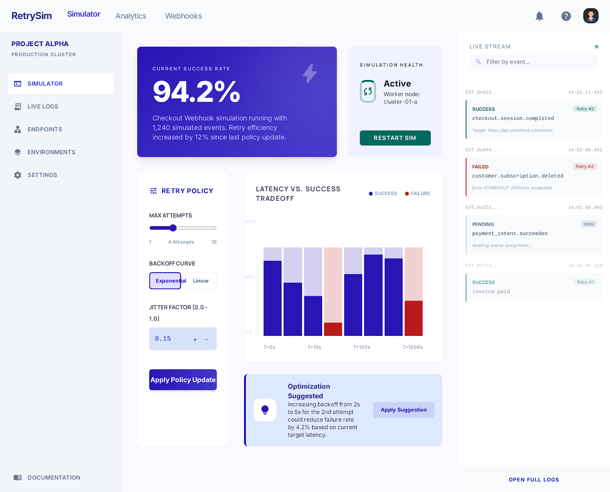

PF SAFE DEMO · 2026-03-02-p001
Webhook Retry Simulator
Simulate retry logic and failure paths so teams can see whether webhook delivery degrades safely under stress.
ingest status
Imported from Stitch exportStitch export wrapped in a PF-safe shell so the approved screen can publish cleanly without remote UI dependencies.
- Source preserved as local artifact
- Public demo path avoids remote CDN dependency
- Preview uses the shipped Stitch screen
